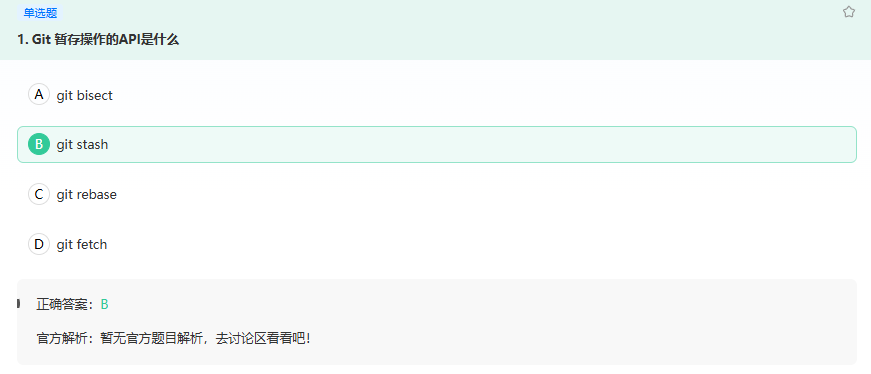
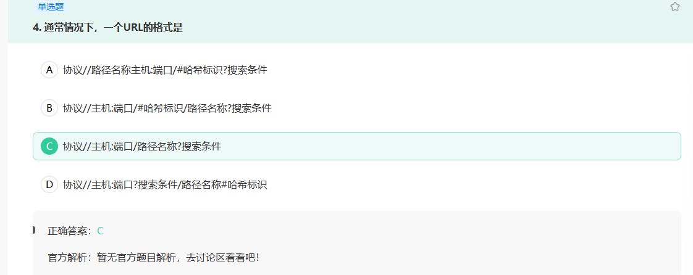
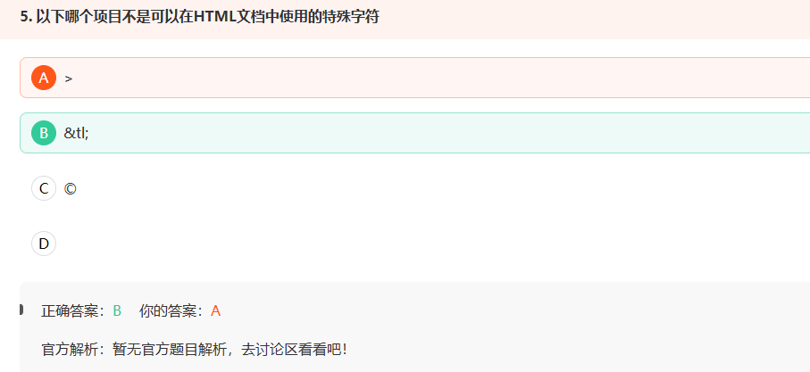
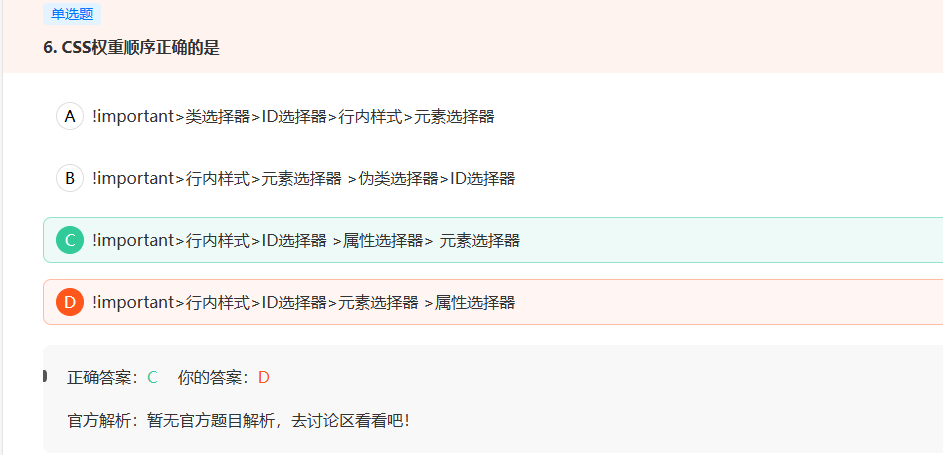
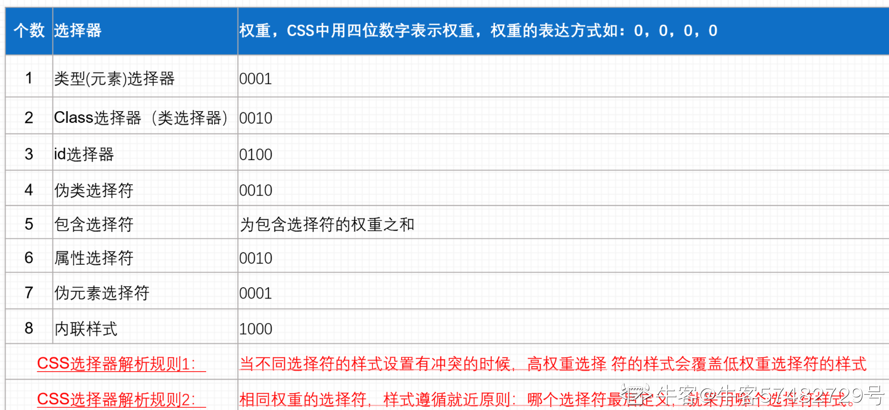
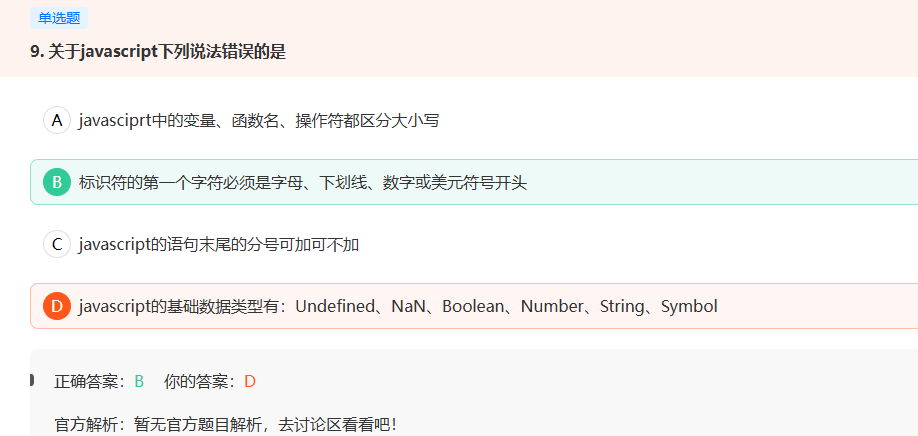
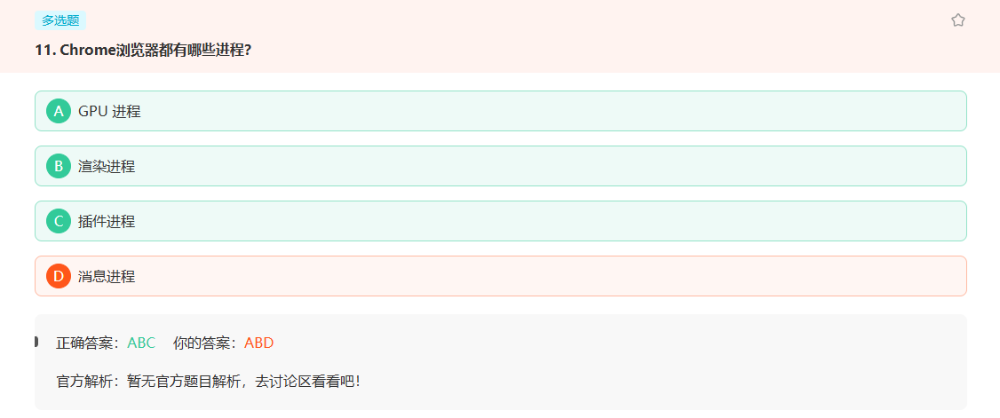
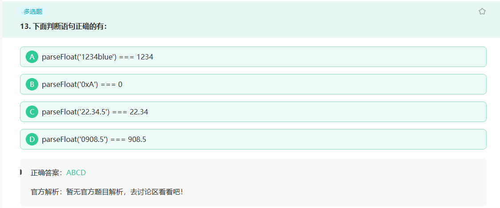

24小米
24小米秋招
考情分析
Git操作

git stash 命令用于暂存当前工作目录的状态，将未提交的修改（包括已跟踪和未跟踪的文件）保存到一个新的stash中。这样可以让你在不提交这些更改的情况下切换分支或进行其他操作。当需要恢复这些更改时，可以从stash中重新应用它们。
其他选项的用途如下：
git bisect用于二分查找引起问题的提交。git rebase用于将一系列提交应用到另一个基础分支上。git fetch用于从远程仓库获取最新的数据，但不会自动合并到当前分支。
url格式

一个标准的URL（Uniform Resource Locator，统一资源定位符）通常由以下几个部分组成：
协议（Protocol）：指定访问资源所使用的协议类型，例如HTTP（超文本传输协议）、HTTPS（安全超文本传输协议）、FTP（文件传输协议）等。
域名（Domain Name）：指定要访问的主机名或域名，例如www.example.com。
端口号（Port Number）：指定服务器监听的端口号，一般默认的端口号是80（HTTP）或443（HTTPS）。
路径（Path）：指定服务器上资源的路径，例如/index.html。
查询参数（Query Parameters）：指定要传递给服务器的参数，例如?key=value。
片段标识符（Fragment Identifier）：指定页面内的一个锚点，例如#section1。
这些部分通常以冒号（:）和斜杠（/）分隔，例如：http://www.example.com/index.html。其中，协议、域名和路径是必须的部分，其他部分可以省略
HTML实体

HTML 实体是一段以连字号（&）开头、以分号（;）结尾的文本（字符串）。HTML 实体常用于显示保留字符（这些字符会被解析为 HTML 代码）和不可见的字符（如“不换行空格”）。你也可以用 HTML 字符实体来代替其他难以用标准键盘键入的字符。
有一些特别的字符被保留用于 HTML 中，这意味着浏览器会将这些字符解析为 HTML 代码。例如，如果你使用小于号（<），浏览器会将其后的文本解析为标签。
为了将这些字符显示为文本，需要使用相应的字符实体来代替它们，如下表所示。
| 字符 | 实体 | 说明 |
|---|---|---|
| & | & |
解析为实体或字符引用的开头 |
| < | < |
解析为tag的开头 |
| > | > |
解析为tag的结尾 |
| ‘’ | " |
解析为attribute的值的开头和结尾 |
|
解析为不换行空格 | |
| - | – |
解析为短破折号(等于em单位的一半宽度) |
| — | — |
解析为长破折号(等于’m’字符的宽度) |
| © | © |
解析为版权符号 |
| ® | ® |
解析为注册商标符号 |
CSS权重


注意
!important具有最高优先级
JS语言基础

该题D选项表述不准确.NaN不是一个数据类型,而是number类型的一个具体的数据值,表示Not A Number
B要注意标识符只能以字母,下划线,美元符号 开头,不能以数字开头.
js的基本数据类型如下:
- Number
- String
- Boolean
- Undefined
- Null
- Symbol
- BigInt
Chrome进程

Chrome 浏览器设计了多进程架构以提高稳定性和性能。以下是 Chrome 浏览器中常见的几种进程类型：
- 浏览器进程 (Browser Process): 这是主进程，负责处理用户界面操作，如地址栏、书签菜单、前进/后退按钮等。它还管理着其他所有进程，并控制它们之间的通信。
- 渲染器进程 (Renderer Process): 每个标签页都有一个或多个渲染器进程，负责渲染网页内容，执行JavaScript代码，处理DOM操作等。为了保证系统的稳定性，即使某个标签页崩溃也不会影响到其他标签页或者整个浏览器。
- GPU进程 (GPU Process): 该进程负责加速图形渲染任务，可以提升页面加载速度和动画效果的流畅度。当网页需要大量的图形处理时，GPU进程会被激活。
- 插件进程 (Plugin Process): 当网页使用某些特定的插件（如Flash）时，会启动插件进程来运行这些插件。这样做的目的是将插件与渲染器进程隔离开来，减少插件对浏览器的影响。
- 实用工具进程 (Utility Process): 用于执行一些辅助性的后台任务，比如PDF文档的打印或预览功能。
- Zygote进程: 在Linux和Android平台上，Zygote进程用于加速新进程的创建。它预先加载了一些通用资源，使得创建新的渲染器或其他类型进程时更加迅速。
- 沙箱进程 (Sandbox Helper Process): 主要作用是在Windows系统上帮助启动其他进程，确保它们在安全的沙箱环境中运行。
ParseFloat方法

parseFloat 是个全局函数，不属于任何对象。
- 如果
parseFloat在解析过程中遇到了正号（+）、负号（-U+002D HYPHEN-MINUS）、数字（0-9）、小数点（.）、或者科学记数法中的指数（e 或 E）以外的字符，则它会忽略该字符以及之后的所有字符，返回当前已经解析到的浮点数。 - 第二个小数点的出现也会使解析停止（在这之前的字符都会被解析）。
- 参数首位和末位的空白符会被忽略。
- 如果参数字符串的第一个字符不能被解析成为数字，则
parseFloat返回NaN。 parseFloat也可以解析并返回Infinity。parseFloat解析BigInt为Numbers, 丢失精度。因为末位n字符被丢弃。
考虑使用 Number(*value*) 进行更严谨的解析，只要参数带有无效字符就会被转换为 NaN 。
parseFloat 也可以转换一个已经定义了 toString 或者 valueOf 方法的对象，它返回的值和在调用该方法的结果上调用 parseFloat 值相同。
 wechat
wechat alipay
alipay